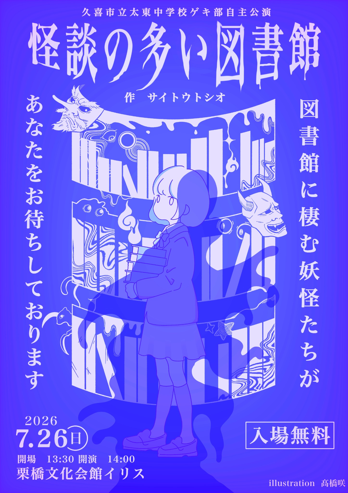

NOW PLAYING
久喜市立太東中学校ゲキ部 自主公演
怪談の多い図書館
図書館に棲む妖怪たちが
あなたをお待ちしております
日時：2026年7月26日（日）開場 13:30／開演 14:00
会場：栗橋文化会館イリス
入場：無料
作：サイトウトシオ illustration：髙橋咲
STORY
あらすじ
『怪談の多い図書館』は、久喜市立中央図書館の休館日に、図書館全体を舞台として上演するために創作された作品です。
休館日の図書館を訪れた森本静花は、太東中学校ゲキ部が上演準備中の『怪談の多い図書館』と出会います。
七つの怪談からなる劇は、最終話の途中で突然退部を申し出た部員によって中断。代役として静花が劇に参加すると、不思議な出来事が次々と起こり、現実と劇の世界が重なり始めます。
そして静花は、妖怪・天邪鬼をめぐる悲しい物語の真実にたどり着くのでした。
CENTRAL LIBRARY PERFORMANCE
本来の舞台は、休館日の中央図書館
この作品は、2026年8月18日に久喜市立中央図書館の休館日に、図書館全体を舞台として上演するために作られました。
7月26日の栗橋文化会館イリスでの自主公演を経て、8月18日には、作品が生まれた目的である中央図書館公演として上演されます。
ABOUT GEKIBU
久喜市立太東中学校ゲキ部
太東中学校ゲキ部は全国大会に2019年から5年連続で、関東大会に2014年から9年連続で代表校に選出されました。
2023年の沖縄全国大会を最後に、活動の場を関東・全国から地域にシフト。「競争より共創」「バトルよりシャトル」を合言葉に、「ビブリオ劇場」と名づけた「本のある場所で演じられる本に関する劇」を、図書館や書店を舞台に上演しています。
BIBLIO THEATER RECORD
ビブリオ劇場の記録
- 2024年7月7日 まちライブラリー＠アトリア参宮橋（渋谷）で「ビブリオドラマ2024」上演。
- 2025年8月7日 神保町のブックハウスカフェで「カンパネラ」上演。
- 2025年8月19日 久喜市立中央図書館の休館日に、図書館全体を舞台にした「ラビリンス」上演。
- 2025年12月7日 久喜市立中央図書館で「ビブリオ劇場 vol.1」上演。
- 2026年2月 『図書館雑誌2月号』の特集で、ゲキ部の「図書館を舞台にした取組」が紹介される。
- 2026年5月〜 久喜市立中央図書館で毎週水曜日に公式の部活動を開始。
- 2026年7月30日 ブックハウスカフェで「ビブリオ劇場＆モノガタリマジック」上演予定。
- 2026年7月31日 ブックハウスカフェで「カラーズ」上演予定。
- 2026年8月18日 久喜市立中央図書館の休館日に、図書館全体を舞台として「怪談の多い図書館」上演。同時に、プロマジシャン・ザッキーによる「モノガタリマジック」も行われる。 8月18日公演の詳細を見る
PROFILE
サイトウトシオ紹介
劇作家。久喜市部活動指導員（演劇）。個人作品集『夏休み』『七つ森』『ふるさと』『バタフライ』が晩成書房より出版されています。作品は全国の小・中学校、高校、劇団等で上演され、その数は1000回を超えます。
主な受賞歴に、子どもが上演する劇脚本公募 特選・晩成書房戯曲賞『降るような星空』、第16回創作テレビ脚本公募（NHK後援）佳作一席（2位）『夏休み』などがあります。
FLYER
公演フライヤー
画像をクリックすると、フライヤーを大きく表示できます。